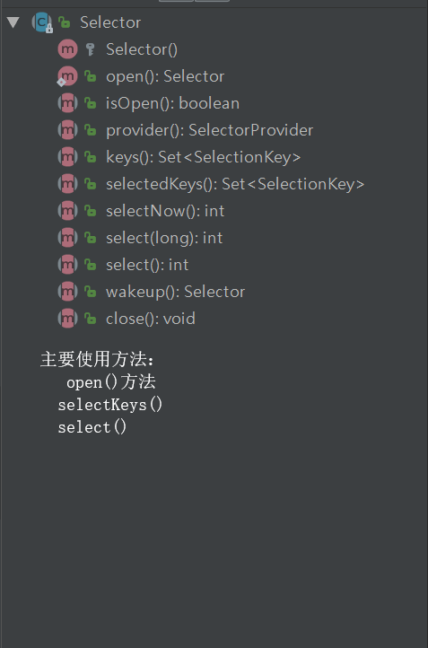

原文连接:https://www.cnblogs.com/yangFly/p/11985421.html
Nio与IO的区别
原有的 IO 是面向流的、阻塞的，NIO 则是面向块的、非阻塞的。
1.IO流每次从流中读一个或多个字节，直至读完所有字节，他们没有被缓存在其他地方，并且，IO流不能移动流中的数据，如果需要前后移动从流中读取的教据，需要先将它缓存到一个缓冲区。Java NIO的缓冲导向方法略有不同。数据读取到一个它稍后处理的缓冲区，霱要时可在缓冲区中前后移动。这就增加了处理过程中的灵活性。但是，还需要检查是否该缓冲区中包含所有您需要处理的数裾。而且，需确保当更多的数据读入缓冲区时，不要覆盖缓冲区里尚未处理的数据。
2.Java IO的各种流是阻塞的。这意味着，当一个线程调用read() 或 write()时，该线程被阻塞，直到有一些数据被读取，或数据完全写入。该线程在此期间不能再干任何事情了。 Java NIO的非阻塞模式，使一个线程从某通道发送请求读取数据，但是它仅能得到目前可用的数据，如果目前没有数据可用时，就什么都不会获取。而不是保持线程阻塞，所以直至数据变的可以读取之前，该线程可以继续做其他的事情。 非阻塞写也是如此。一个线程请求写入一些数据到某通道，但不需要等待它完全写入，这个线程同时可以去做别的事情。 线程通常将非阻塞IO的空闲时间用于在其它通道上执行IO操作，所以一个单独的线程现在可以管理多个输入和输出通道（channel）。、
通道Channel
NIO的通道类似于流，但有些区别如下：
1. 通道可以同时进行读写，而流只能读或者只能写
2. 通道可以实现异步读写数据
3. 通道可以从缓冲读数据，也可以写数据到缓冲:
缓冲区Buffer类
缓冲区是一个对象，有四个基本属性，Nio的读写都是利用Buffer来实现的，简而言之，读取数据先从缓冲区读，写数据也是先写入缓冲区的。我们最常用的是ByteBuffer这个实现类，对于Java中的基本类型都有一个对应的Buffer实现类与之对应，如CharBuffer,DoubleBuffer等等
1丶其中的四个属性的含义分别如下：
容量（Capacity）：缓冲区能够容纳的数据元素的最大数量。这一个容量在缓冲区创建时被设定，并且永远不能改变。
上界(Limit)：缓冲区的第一个不能被读或写的元素。或者说,缓冲区中现存元素的计数。
位置(Position)：下一个要被读或写的元素的索引。位置会自动由相应的 get( )和 put( )函数更新。
标记(Mark)：下一个要被读或写的元素的索引。位置会自动由相应的 get( )和 put( )函数更新。
2丶Buffer的常见方法如下所示:
flip(): 写模式转换成读模式
rewind()：将 position 重置为 0 ，一般用于重复读。
clear() ：
compact(): 将未读取的数据拷贝到 buffer 的头部位。
mark(): reset():mark 可以标记一个位置， reset 可以重置到该位置
3丶读取操作
0.png)
1.png)
1 FileInputStream inputStream = new FileInputStream("E:\\A.txt");
2 /**
3 * 拿到通道
4 */
5 FileChannel channel = inputStream.getChannel();
6
7 /**
8 * 创建缓存区
9 */
10 ByteBuffer buffer = ByteBuffer.allocate(1024);
11
12 /**
13 * 读取数据到缓冲区
14 */
15 channel.read(buffer);
16
17 buffer.flip();
18
19 while (buffer.remaining() > 0){
20 byte b = buffer.get();
21 System.out.println(((char)b));
22 }
23 /**
24 * 关闭流
25 */
26 inputStream.close();4丶写入操作
1 static private final byte message[] = { 83,83,83,83,83,83 };
2
3 static public void main( String args[] ) throws Exception {
4 FileOutputStream fout = new FileOutputStream( "e:\\A.txt" );
5
6 FileChannel fc = fout.getChannel();
7
8 ByteBuffer buffer = ByteBuffer.allocate( 1024 );
9
10 for (int i=0; i<message.length; ++i) {
11 buffer.put( message[i] );
12 }
13
14 buffer.flip();
15
16 fc.write( buffer );
17
18 fout.close();
19 }选择器Selector
可以检测多个NIO channel，看看读或者写事件是否就绪。多个Channel以事件的方式可以注册到同一个Selector，从而达到用一个线程处理多个请求成为可能。
使用NIO中非阻塞IO编写服务器处理程序，有三个步骤
1.向Selector对象注册感兴趣的事件
2.从Selector中获取感兴趣的事件
3.根据不同事件进行相应的处理

简单API介绍
open：创建selector
selectKeys:获取可用channel的集合
select:选择就绪的通道
简单聊天室实现思路代码
服务器代码
1 public class NioServer {
2
3
4 public void start() throws Exception {
5 /**
6 * 1.创建selector
7 */
8 Selector selector = Selector.open();
9 /**
10 * 2.通过ServerSocketChannel创建channel
11 */
12 ServerSocketChannel serverSocketChannel = ServerSocketChannel.open();
13
14 /**
15 * 3.为channel通道绑定监听端口
16 */
17 serverSocketChannel.bind(new InetSocketAddress(8000));
18 /**
19 * 4.设置channel 为非阻塞模式
20 */
21 serverSocketChannel.configureBlocking(false);
22 /**
23 * 5.将channel 注册到selector，监听连接
24 */
25 serverSocketChannel.register(selector,SelectionKey.OP_ACCEPT);
26 System.out.println("服务器启动成功");
27 /**
28 * 6.循环等待新接入的连接
29 */
30 for(;;){
31 int select = selector.select();
32 if (select == 0){
33 continue;
34 }
35
36 /**
37 * 7.获取可用channel的集合
38 */
39 Set<SelectionKey> keys = selector.selectedKeys();
40 Iterator<SelectionKey> iterator = keys.iterator();
41 while (iterator.hasNext()){
42 SelectionKey selectionKey = (SelectionKey) iterator.next();
43 /**
44 * 8.移除selctionKey
45 */
46 iterator.remove();
47 /**
48 * 处理具体业务逻辑
49 */
50 /**
51 * 接入事件
52 */
53 if (selectionKey.isAcceptable()){
54 acceptHandler(serverSocketChannel,selector);
55 }
56 /**
57 * 可读事件
58 */
59 if(selectionKey.isReadable()){
60 readHandler(selectionKey, selector);
61 }
62 }
63
64
65 }
66
67
68 /**
69 * 根据就绪状态，调用对应方法处理业务逻辑
70 */
71
72 }
73
74 /**
75 * 接入事件处理器
76 */
77 private void acceptHandler(ServerSocketChannel serverSocketChannel, Selector selector) throws Exception {
78 /**
79 * 如果是接入事件 创建serverSocket
80 */
81 SocketChannel socketChannel = serverSocketChannel.accept();
82 /**
83 * 设置非阻塞
84 */
85 socketChannel.configureBlocking(false);
86 /**
87 * 注册进selector中
88 */
89 socketChannel.register(selector, SelectionKey.OP_READ);
90 /**
91 * 回复服务端信息
92 */
93 socketChannel.write(Charset.forName("UTF-8").encode("你与聊天室里其他人都不是朋友关系,请注意隐私安全"));
94
95 }
96
97 private void readHandler(SelectionKey selectionKey, Selector selector) throws Exception{
98 /**
99 * 要用selectionKey中获取已经就绪的channel
100 */
101 SocketChannel channel = (SocketChannel)selectionKey.channel();
102 /**
103 * 创建buffer
104 */
105 ByteBuffer buffer = ByteBuffer.allocate(1024);
106 /**
107 * 循环读取客户端数据
108 */
109 String request = "";
110 while (channel.read(buffer) > 0){
111 /**
112 * 切换读模式
113 */
114 buffer.flip();
115 /**
116 * 读取buffer中的内容
117 */
118 request += Charset.forName("UTF-8").decode(buffer);
119
120 }
121 /**
122 * 讲channel注册到selector上
123 */
124 channel.register(selector, SelectionKey.OP_READ);
125 /**
126 * 讲客户端发送的请求信息，广播给其他客户端
127 */
128 if (request.length() > 0){
129 broadCast(selector, channel, request);
130 }
131 }
132
133 private void broadCast(Selector selector, SocketChannel socketChannel, String request){
134 /**
135 * 获取到已接入的客户端hannel
136 */
137 Set<SelectionKey> selectionKeys = selector.keys();
138 selectionKeys.forEach(selectionKey -> {
139 Channel channel = selectionKey.channel();
140 if (channel instanceof SocketChannel &&
141 channel != socketChannel){
142 try {
143 //将信息发送到channel客户端
144 ((SocketChannel) channel).write(Charset.forName("UTF-8").encode(request));
145 } catch (IOException e) {
146 e.printStackTrace();
147 }
148 }
149 });
150 /**
151 * 循环向所有channel广播信息
152 */
153 }
154 /**
155 *
156 * @param args
157 */
158 public static void main(String[] args) throws Exception {
159 NioServer server = new NioServer();
160 server.start();
161 }
162 }
客户端代码
1 public class NioClient {
2
3
4 public void start() throws Exception {
5 /**
6 * 连接服务器
7 */
8 SocketChannel socketChannel = SocketChannel.open(new InetSocketAddress("127.0.0.1", 8000));
9 /**
10 * 接收服务器地址
11 */
12 Selector selector = Selector.open();
13 socketChannel.configureBlocking(false);
14 socketChannel.register(selector, SelectionKey.OP_READ);
15 new Thread(new NioClientHandler(selector)).start();
16 /**
17 * 向服务器发送数据
18 */
19 Scanner scanner = new Scanner(System.in);
20 while (scanner.hasNextLine()){
21 String next = scanner.nextLine();
22 if (StringUtils.isNotBlank(next)){
23 socketChannel.write(Charset.forName("UTF-8").encode(next));
24 }
25 }
26 }
27
28 public static void main(String[] args) throws Exception {
29 new NioClient().start();
30 }
31 }客户端线程类
1 public class NioClientHandler implements Runnable {
2
3 private Selector selector;
4
5 public NioClientHandler(Selector selector) {
6 this.selector = selector;
7 }
8
9 @Override
10 public void run() {
11 /**
12 * 循环等待新接入的连接
13 */
14 try {
15 for(;;){
16 int select = 0;
17 select = selector.select();
18
19 if (select == 0){
20 continue;
21 }
22
23 /**
24 * 获取可用channel的集合
25 */
26 Set<SelectionKey> keys = selector.selectedKeys();
27 Iterator<SelectionKey> iterator = keys.iterator();
28 while (iterator.hasNext()){
29 SelectionKey selectionKey = (SelectionKey) iterator.next();
30 /**
31 * 移除selctionKey
32 */
33 iterator.remove();
34 /**
35 * 可读事件
36 */
37 if(selectionKey.isReadable()){
38 readHandler(selectionKey, selector);
39 }
40 }
41 }
42 } catch (Exception e) {
43 e.printStackTrace();
44 }
45
46
47 }
48
49 private void readHandler(SelectionKey selectionKey, Selector selector) throws Exception{
50 /**
51 * 要用selectionKey中获取已经就绪的channel
52 */
53 SocketChannel channel = (SocketChannel)selectionKey.channel();
54 /**
55 * 创建buffer
56 */
57 ByteBuffer buffer = ByteBuffer.allocate(1024);
58 /**
59 * 循环读取客户端数据
60 */
61 String request = "";
62 while (channel.read(buffer) > 0){
63 /**
64 * 切换读模式
65 */
66 buffer.flip();
67 /**
68 * 读取buffer中的内容
69 */
70 request += Charset.forName("UTF-8").decode(buffer);
71
72 }
73 /**
74 * 讲channel注册到selector上
75 */
76 channel.register(selector, SelectionKey.OP_READ);
77 /**
78 * 讲客户端发送的请求信息，广播给其他客户端
79 */
80 if (request.length() > 0){
81 System.out.println(request);
82 }
83 }
84 }